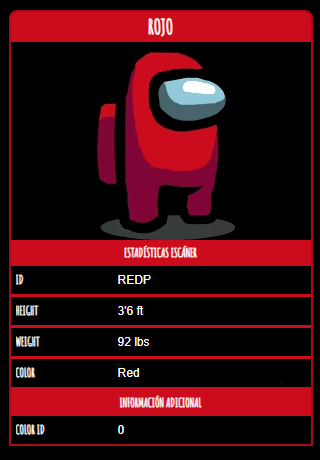

Rojo

Rojo es uno de los colores más notables en Among Us que el
jugador puede
personalizar. También se considera la mascota principal del juego y aparece en varias fotos promocionales
e íconos de aplicaciones.
Curiosidades
- Rojo es el color que se utiliza para el Impostor en los carteles
promocionales
del juego.
- Rojo está en seis fotos promocionales, por lo que está empatado con Rosa y
Naranja en la
mayoría de las apariciones.
- Rojo también aparece al comienzo de cada juego con el texto "¡Shhhhhhh!".
- En la parte de Impostor de "Cómo jugar", Rojo se usa como el Impostor.